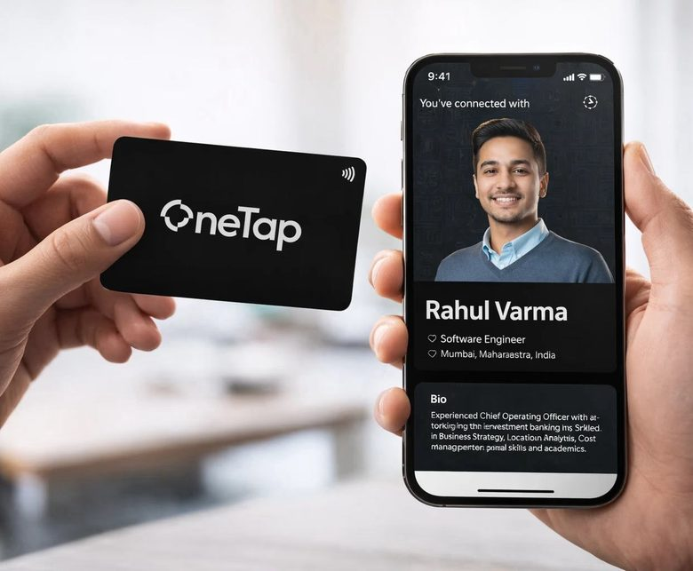
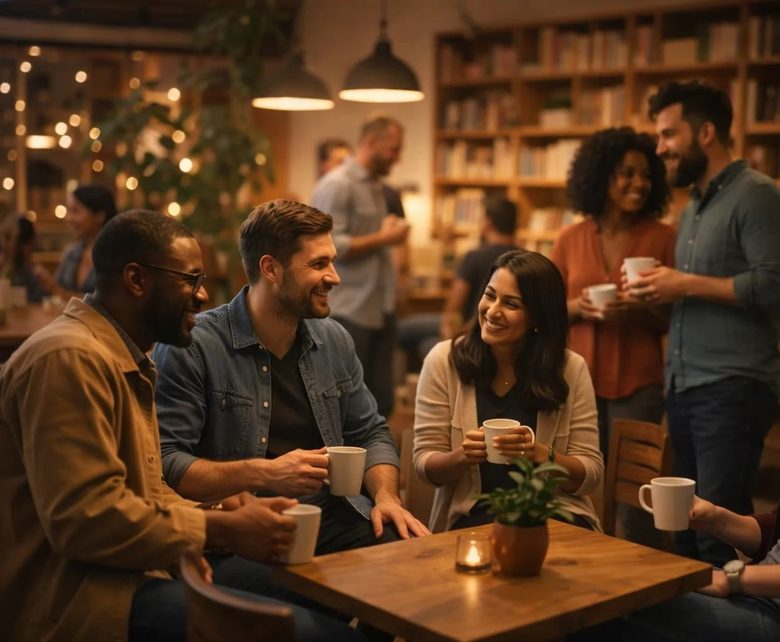

Propenize : Smarter way to invest.
Designed the onboarding-to-checkout flow for a blockchain real estate investment platform, KYC, investment browsing, and cart, condensed into four steps that got 98% of users through verification instead of dropping off.
2025 · UX DESIGNER
→
Plant Diaper : Save water, Grow better.
Researched a crowded plant-care market through competitor analysis, then designed an end-to-end e-commerce site, for a sustainable moisture-retention product built to cut watering by 50%.
2026 · UX DESIGNER
→
Little-Box : UX Evaluation & Redesign.
Led a redesign of an e-commerce site's usability, backed by heuristic evaluation, SUS scoring, NASA TLX, and eye-tracking, not just instinct, as part of a 4-person team.
2025 · UX DESIGNER
→
One-Tap : Reimagining Networking with a Single Tap
Contributed to onboarding flow design for an early-stage networking startup during a 3-month internship, helping the app reach 100–150 early users.
2025 · UX DESIGNER
→
Third Places : How Adults Find Connection Nowadays
A research project on the decline of "third places," Ray Oldenburg's term for informal community spaces like cafés and community centers. It looked at what urban working adults are replacing them with, and translated those findings into design implications, not just a trend report.
2025 · UX DESIGNER
→